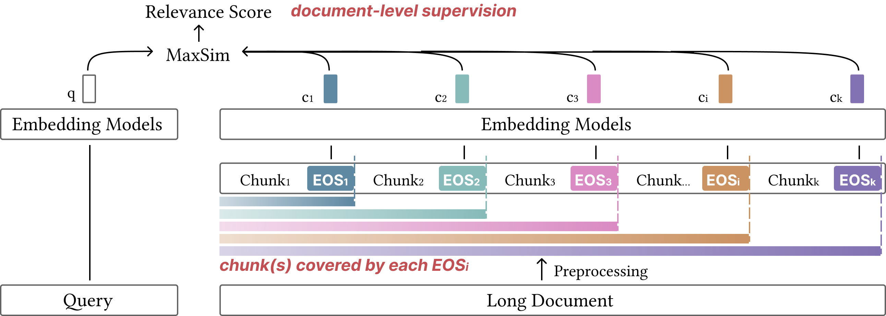
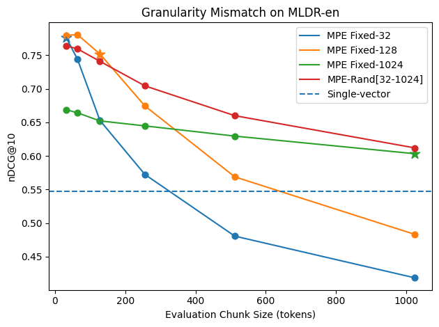
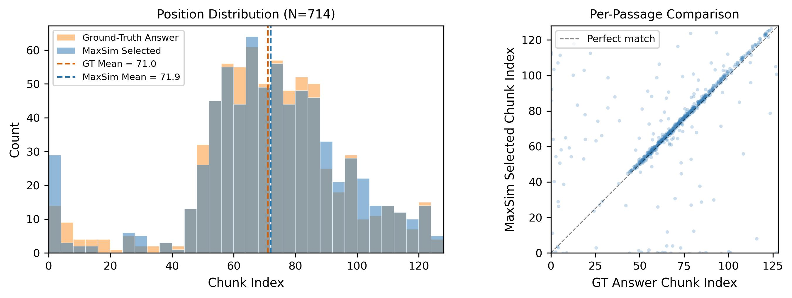

Long-context document retrieval exposes a fundamental tension: single-vector representations compress entire documents into one embedding, inevitably losing fine-grained information, while token-level multi-vector methods preserve detail at prohibitive storage cost. We propose Multi-Prefix Embedding (MPE), which advances the long-context capability of large language model embedding models by partitioning documents into chunks separated by EOS tokens and encoding the entire sequence in a single forward pass. MPE extracts one embedding per prefix position, preserving cross-chunk context through causal attention while enabling fine-grained chunk-level matching via MaxSim scoring. Training MPE requires only document-level relevance labels, sidestepping the need for chunk-level annotations. Comprehensive experiments on MLDR-en, BrowseComp-Plus, and LongEmbed demonstrate the advantage of MPE over competitive single-vector and multi-vector baselines.

Multi-Prefix Embedding (MPE). A long document is split into chunks and concatenated with EOS tokens into a single sequence. The encoder processes the sequence in one forward pass, and prefix embeddings are extracted at EOS1, ..., EOSK. Relevance is computed via MaxSim.
Given a long document with L tokens, MPE partitions it into K consecutive chunks of length s by inserting an EOS token after every s−1 content tokens. The entire sequence is encoded in a single forward pass through a pretrained causal language model. Because attention is left-to-right, the hidden state at each EOS position conditions on all preceding tokens — each prefix embedding captures both its local chunk and all prior context.
Query–document similarity is defined as the maximum inner product between the query embedding and any prefix embedding. The max operator reflects the localized nature of relevance: a query typically matches a specific region of a document. We train with standard contrastive loss using cross-device negatives. At search time, all prefix embeddings are indexed in a FAISS flat inner-product index.
Training with a fixed chunk size can overfit the model to a specific granularity. We introduce random prefix-length augmentation: for each training passage, the chunk size is sampled uniformly from [smin, smax]. This exposes the model to diverse prefix boundaries and enables a single model to generalize across evaluation chunk sizes without retraining.
We compare five settings that progressively introduce components:
| Setting | MaxSim Train | Cross Chunk-Attn | Rand-Size |
|---|---|---|---|
| Single-vector | × | — | × |
| MaxP | × | × | × |
| MaxP-Train | ✓ | × | × |
| MPE Fixed-N | ✓ | ✓ | × |
| MPE-Rand[a,b] | ✓ | ✓ | ✓ |
| Method | MLDR-en | BC+ | NarrativeQA | 2WikiMQA | SummScreen | QMSum |
|---|---|---|---|---|---|---|
| BM25 | 0.679 | 0.016 | 0.715 | 0.965 | 0.976 | 0.813 |
| jina-v2-base-en | 0.370 | — | 0.394 | 0.740 | 0.935 | 0.389 |
| OpenAI-Ada-002 | 0.387 | — | 0.411 | 0.801 | 0.918 | 0.400 |
| E5-Mistral-7B | 0.433 | — | 0.449 | — | — | — |
| BGE-M3 | 0.489 | — | 0.487 | 0.780 | 0.940 | 0.355 |
| BGE-M3mv | 0.558 | — | 0.554 | — | — | — |
| Single-vector | 0.548 | 0.132 | 0.544 | 0.865 | 0.980 | 0.564 |
| MaxP | 0.758 | 0.103 | 0.604 | 0.944 | 0.908 | 0.550 |
| MaxP-Train | 0.776 | 0.104 | 0.557 | 0.945 | 0.903 | 0.569 |
| MPE Fixed-64 | 0.783 | 0.122 | 0.576 | 0.940 | 0.925 | 0.652 |
| MPE-Rand[32,1024] | 0.760 | 0.153 | 0.579 | 0.945 | 0.949 | 0.705 |
Baseline results from original papers. All our methods (below divider) use Qwen3-Embedding (0.6B); multi-vector methods evaluated at chunk size 64. Bold = best among dense methods (excluding BM25). LongEmbed and BrowseComp-Plus results are zero-shot (trained on MLDR-en only).
MPE-Rand as the retrieval backend in an agentic QA pipeline on BrowseComp-Plus (Gemini 3 Flash Preview agent):
| Retriever | Acc. (%) | Recall (%) | Avg. Calls | Cal. Err. (%) |
|---|---|---|---|---|
| BM25 | 34.94 | 37.78 | 18.85 | 51.17 |
| Single-vector | 42.29 | 48.00 | 17.40 | 46.99 |
| MPE-Rand[32,1024] | 51.45 | 57.70 | 15.78 | 39.74 |
MPE-Rand improves end-to-end accuracy from 42.29% to 51.45% (+21.7% relative) while requiring fewer search calls.

Granularity mismatch on MLDR-en. Fixed-size MPE specialists (stars = matched train–eval size) degrade sharply at mismatched evaluation granularities, while MPE-Rand traces the upper envelope with a single model.
Fixed-size specialists degrade sharply at mismatched evaluation sizes. MPE-Rand[32,1024] achieves performance comparable to each specialist's peak at the corresponding chunk size, consistently avoiding steep performance drops. This decouples training granularity from evaluation granularity: a single trained model can be deployed at any chunk size — larger chunks for a compact index, finer chunks for higher recall — without retraining.

MaxSim-selected chunk positions vs. Gemini-annotated ground-truth answer positions on MLDR-en (714 passages; 64-token chunks, 128 chunks per document). Left: overlaid position distributions with nearly identical means (chunk 71.9 vs. 71.0). Right: per-passage scatter plot showing strong rank correlation (Spearman ρ = 0.77).
MaxSim localizes the correct chunk within ±1 position for 65.7% of passages, with Spearman ρ = 0.77 (p < 10−138). This confirms that MPE's improvement comes from preserving and identifying relevant chunks, providing a natural source attribution mechanism: the MaxSim-selected chunk can be directly surfaced to users as supporting evidence.
If you find this work useful, please cite:
@inproceedings{yu2025mpe,
title={Improving Long-Context Retrieval with Multi-Prefix Embedding},
author={Yu, Zhenglin and Ma, Xueguang and Zhuang, Shengyao and Xu, Zhichao and Gao, Luyu and Zhang, Crystina and Lin, Jimmy},
booktitle={LateInteraction Workshop},
year={2025}
}